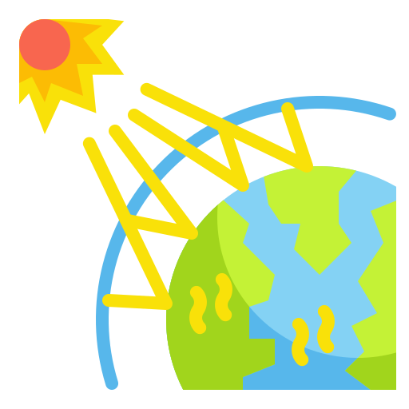

|
ENVIVALION |
|
|
ENVIVALION |
Desde la Revolución Industrial, la temperatura global anual ha aumentado en total un poco más de 1 grado Celsius, o alrededor de 2 grados Fahrenheit. Entre 1880, el año en que se inició el mantenimiento de registros precisos, y 1980, la temperatura aumentó un promedio de 0,07 grados Celsius (0,13 grados Fahrenheit) cada 10 años. Sin embargo, desde 1981, la tasa de aumento se ha más que duplicado: durante los últimos 40 años, hemos visto un aumento anual de la temperatura global de 0,18 grados Celsius, o 0,32 grados Fahrenheit, por década.
Actualmente los científicos del clima llegaron a la conclusión de que debemos limitar el calentamiento global a 1,5 grados Celsius para 2040 si queremos evitar un futuro en el que la vida cotidiana a nivel mundial esté marcada por sus peores y más devastadores efectos: las sequías extremas, los incendios forestales, las inundaciones, las tormentas tropicales y otros desastres a los que nos referimos colectivamente como cambio climático.
El calentamiento global ocurre cuando el dióxido de carbono (CO2) y otros contaminantes del aire se acumulan en la atmósfera y absorben la luz y la radiación solar que rebota en la superficie de la tierra.
|
Normalmente, esta radiación escaparía al espacio, pero estos contaminantes, que pueden durar años o siglos en la atmósfera, atrapan el calor y hacen que el planeta se caliente. Estos contaminantes que atrapan el calor, específicamente el dióxido de carbono, el metano, el óxido nitroso, el vapor de agua y los gases fluorados sintéticos, se conocen como gases de efecto invernadero y su impacto se denomina de la misma manera. |
 |
Limitar el peligro del cambio climático requiere recortes profundos de las emisiones, así como el uso de alternativas a los combustibles fósiles en todo el mundo
Para evitar los peores impactos del cambio climático, los científicos nos dicen que debemos reducir las emisiones globales de carbono hasta en un 40 por ciento para 2030.
Para que eso suceda, la comunidad global debe tomar medidas inmediatas y concretas: descarbonizar la producción de electricidad para transicionar de manera equitativa de la producción basada en combustibles fósiles a fuentes de energía renovables como la eólica y la solar; para electrificar nuestros autos y camiones; y maximizar la eficiencia energética en nuestros edificios, electrodomésticos e industrias.
Los impactos del calentamiento global se sienten en todas partes. Las olas de calor extremo han causado decenas de miles de muertes en todo el mundo en los últimos años.
Y en una señal alarmante de los acontecimientos venideros, la Antártida ha perdido casi cuatro trillones de toneladas métricas de hielo desde la década de 1990. La tasa de pérdida podría acelerarse si seguimos quemando combustibles fósiles al ritmo actual, dicen algunos expertos, lo que provocará que el nivel del mar aumente varios metros en los próximos 50 a 150 años y cause estragos en las comunidades costeras de todo el mundo.
Leer más sobre:
|
Energías Renovables |
Contaminación |
¿Qué es el Medio Ambiente? |